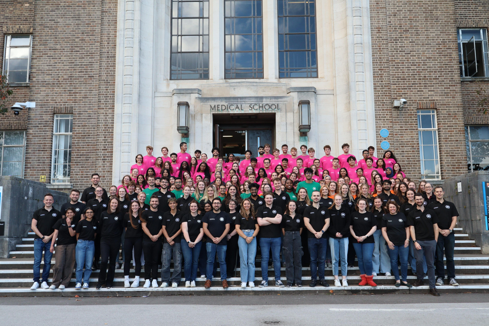

Learning BLS from fellow students, at the University of Birmingham

RMD stands for Resuscitation, Mentorship and Development. It started in 1995, when three medical students at the University of Birmingham decided to teach basic life support (BLS) to other healthcare students, in a friendly, hands-on way, student to student.
Today it is one of the biggest courses of its kind in Europe. Students run it, and a senior team of clinical and non-clinical staff, including one of the founders, Prof Jon Hulme, supports them. The GMC has highlighted it as an innovative way to teach, and the Faculty of Intensive Care Medicine endorses it. Many of our candidates go on to become instructors, assessors and leaders themselves.
Every year we teach about 1,200 first-year candidates from eight different courses, and around 350 more through refresher training. Our team is 65 BLS instructors and 20 assessors, and we are out on campus on UoB Open Days showing staff, students and visitors how to do BLS.
Our community arm, MiLE, takes BLS training across Birmingham and beyond.
Meet the students who run RMD Birmingham, and the senior team who support them.
Already part of RMD? Sign in for the Instructor Weekend, MOU, resources and more.
Sign in →